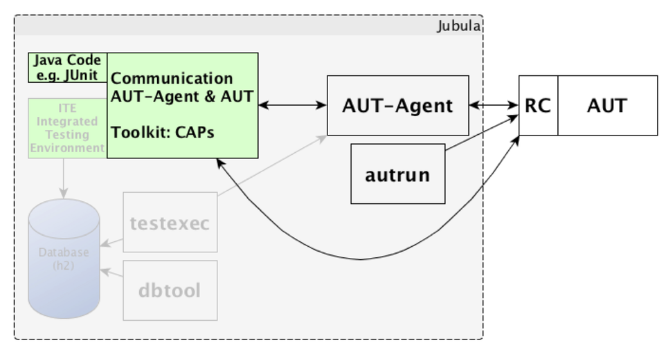

API
Jubula goes JUnit
by @MarkusTiede -
BREDEX GmbH
and
Sebastian Struckmann - BREDEX
GmbH
What's Jubula?

@eclipse.org/jubula (2004) - 2011 - 2014
automated functional GUI testing
Code-free keyword-based black-box approach
human-readable test steps + robust UI widget recognition
ITE DEMO
Jubula - the big picture

Jubula - 3.0

Jubula - 3.0

Jubula - 3.0

Jubula - 3.0

Jubula - 3.0
DEMO
Additional information
cross-toolkit support: SWT/RCP, Swing, JavaFX, HTML, iOS, .NET, ...
1:1 low level API for ITE functionality
(in)-official converter for existing ITE projects
Getting started?
First glance:
Jubula Mars M4 - Friday, December 18
download.eclipse.org/jubula/milestones/mars-m4
Official Release:
Jubula Standalone Release Q1 2015
ships with Eclipse Mars in June 2015
Thanks!
Sebastian.Struckmann@bredex.deTwitter: @MarkusTiede
Markus.Tiede@bredex.de
Copyright BREDEX GmbH 2014. Made available under the Eclipse Public License v1.0.